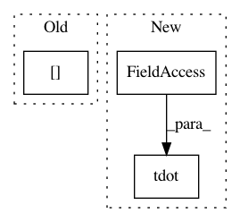

4143f005403808d11928b9772a9a40679a4d441e,GPy/kern/_src/psi_comp/rbf_psi_comp.py,,psicomputations,#Any#Any#Any#Any#,8
Before Change
S = variational_posterior.variance
psi0 = np.empty(mu.shape[0])
psi0[:] = variance
psi1 = _psi1computations(variance, lengthscale, Z, mu, S)
psi2 = _psi2computations(variance, lengthscale, Z, mu, S).sum(axis=0)
return psi0, psi1, psi2
After Change
return psi0, psi1, psi2
def __psi1computations(variance, lengthscale, Z, mu, S):
Z - MxQ
mu - NxQ
S - NxQ
gamma - NxQ
In pattern: SUPERPATTERN
Frequency: 3
Non-data size: 3
Instances
Project Name: SheffieldML/GPy
Commit Name: 4143f005403808d11928b9772a9a40679a4d441e
Time: 2015-08-27
Author: alan.daniel.saul@gmail.com
File Name: GPy/kern/_src/psi_comp/rbf_psi_comp.py
Class Name:
Method Name: psicomputations
Project Name: SheffieldML/GPy
Commit Name: 3549a676a88a898c51175f3613956f6d5fd2acd0
Time: 2013-12-04
Author: james.hensman@gmail.com
File Name: GPy/core/gp.py
Class Name: GP
Method Name: _raw_predict
Project Name: SheffieldML/GPy
Commit Name: 9fb090a5085f61c6555d9d6e850c5fc6d7c26007
Time: 2013-04-26
Author: james.hensman@gmail.com
File Name: GPy/kern/linear.py
Class Name: linear
Method Name: _psi_computations